Using AWS for CUDA
Presenter Notes
Creating the Instance
This is how your AWS console should look like after you sign in.
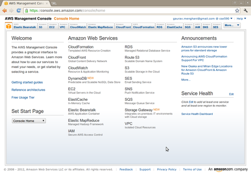
Presenter Notes
Amazon EC2
Select Amazon EC2 from the top-bar, and click on 'Launch Instance'.
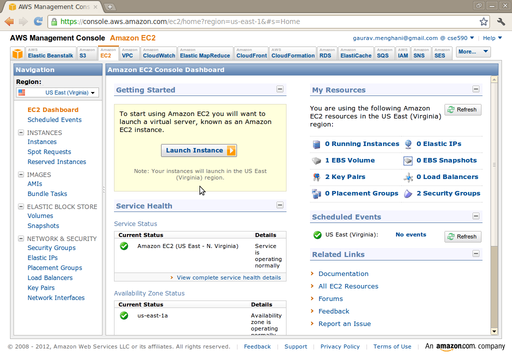
Presenter Notes
Amazon EC2
Select 'Classic Wizard' and click on Continue.

Presenter Notes
Instance Specifications
Select 'Community AMI' and search for 'gpu'. Select the "CentOS 5.5 GPU HVM AMI".
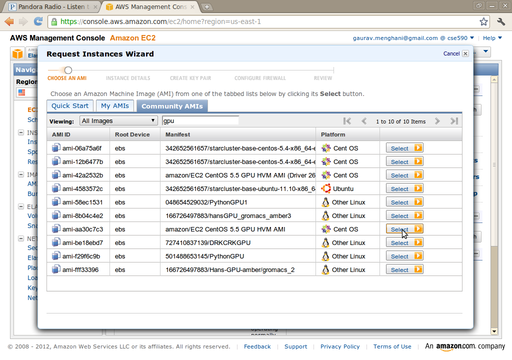
Presenter Notes
Instance Specifications
Set the 'Instance Type' as 'Cluster GPU'.
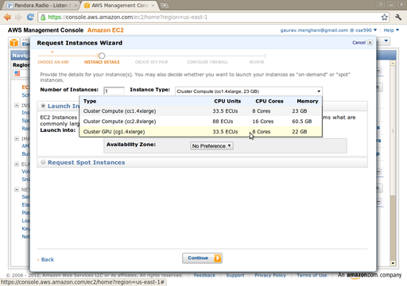
Presenter Notes
Instance Specifications
Click on 'Continue'.
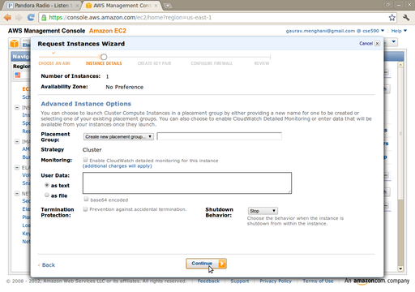
Presenter Notes
Instance Specifications
Click on 'Continue'.
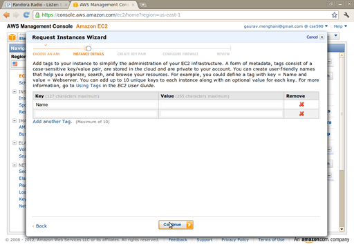
Presenter Notes
Instance Specifications
Type in a name for the key pair, and click on 'Create & Download Your Key Pair'.
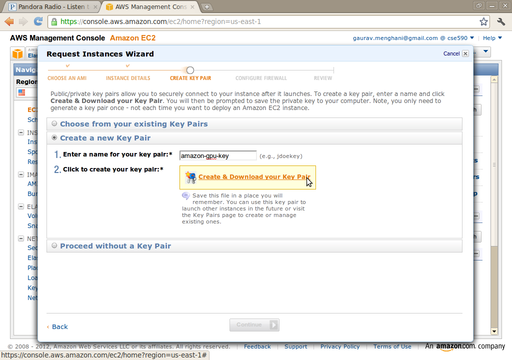
Presenter Notes
Instance Specifications
Set the Security Group as shown below to "default".
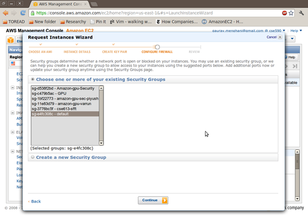
Presenter Notes
Review
Verify the details and click on 'Launch'.
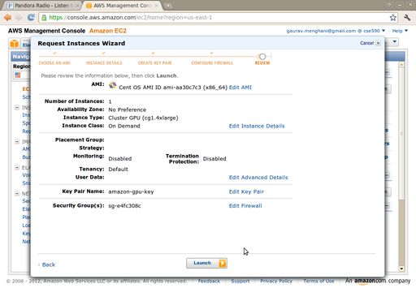
Presenter Notes
Confirmation
You should receive this confirmation.
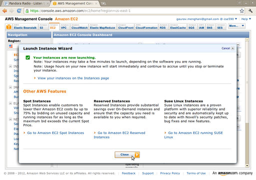
Presenter Notes
Instance is Up!
Your instance should be up and running in a couple of minutes.
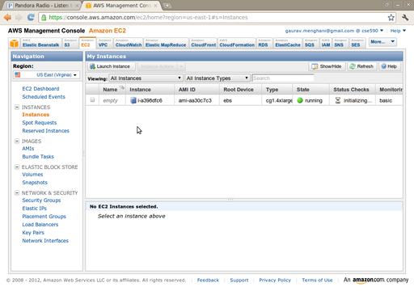
Presenter Notes
Note the Public DNS
Select the instance, and scroll down the properties to see the Public DNS of the instance.
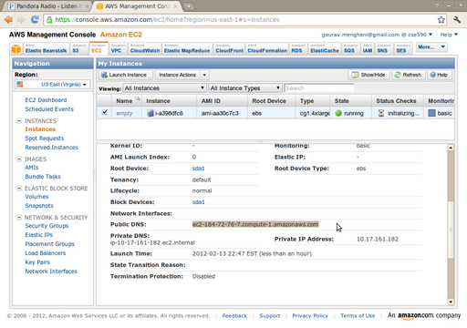
Presenter Notes
Instance Setup
Here is how I ssh-ed into my instance, I fired up a terminal and typed the following command (please replace the host-name with the Public DNS entry that you have for your instance):
reddragon@reddragon-laptop:~$ ssh root@ec2-184-72-76-7.compute-1.amazonaws.com
-i amazon-gpu-key.pem
Once you are able to get into the account, update the packages:
[root@ip-10-17-144-169 ~]# yum update kernel kernel-devel kernel-headers
Install the following packages:
[root@ip-10-17-144-169 ~]# yum install mesa-libGLU-devel
[root@ip-10-17-144-169 ~]# yum install libXi-devel
[root@ip-10-17-144-169 ~]# yum install freeglut-devel
Presenter Notes
Setting up CUDA
We will update the CUDA driver, install the toolkit and the SDK on this instance. The CUDA Downloads page has all the stuff we need, especially the CUDA Getting Started Linux Guide.
[root@ip-10-17-144-169 ~]# wget http://developer.download.nvidia.com/compute/cuda/4_
1/rel/drivers/NVIDIA-Linux-x86_64-285.05.33.run
[root@ip-10-17-144-169 ~]# chmod +x NVIDIA-Linux-x86_64-285.05.33.run
[root@ip-10-17-144-169 ~]# ./NVIDIA-Linux-x86_64-285.05.33.run
[root@ip-10-17-144-169 ~]# wget http://developer.download.nvidia.com/compute/cuda/4_
0/toolkit/cudatoolkit_4.0.17_linux_64_rhel5.5.run
[root@ip-10-17-144-169 ~]# chmod +x cudatoolkit_4.0.17_linux_64_rhel5.5.run
[root@ip-10-17-144-169 ~]# ./cudatoolkit_4.0.17_linux_64_rhel5.5.run
[root@ip-10-17-144-169 ~]# wget http://developer.download.nvidia.com/compute/cuda/4_
1/rel/sdk/gpucomputingsdk_4.1.28_linux.run
[root@ip-10-17-144-169 ~]# chmod +x gpucomputingsdk_4.1.28_linux.run
[root@ip-10-17-144-169 ~]# ./gpucomputingsdk_4.1.28_linux.run
Also set the PATH variable
[root@ip-10-17-144-169 bin]# export PATH=/usr/local/cuda/bin:$PATH
Change your directory to the SDK and make
[root@ip-10-17-144-169 bin]# cd NVIDIA_GPU_Computing_SDK/ && make
Presenter Notes
Running an Example
Now cd into the bin/linux/release directory, and see if the examples are working
[root@ip-10-17-144-169 C]# cd bin/linux/release/
[root@ip-10-17-144-169 C]# ./simpleMultiGPU
Your output should be like the following:
[simpleMultiGPU] starting...
CUDA-capable device count: 2
Generating input data...
Computing with 2 GPU's...
GPU Processing time: 22.905001 (ms)
Computing with Host CPU...
Comparing GPU and Host CPU results...
GPU sum: 16777280.000000
CPU sum: 16777294.395033
Relative difference: 8.580068E-07
[simpleMultiGPU] test results...
PASSED
> exiting in 3 seconds: 3...2...1...done!